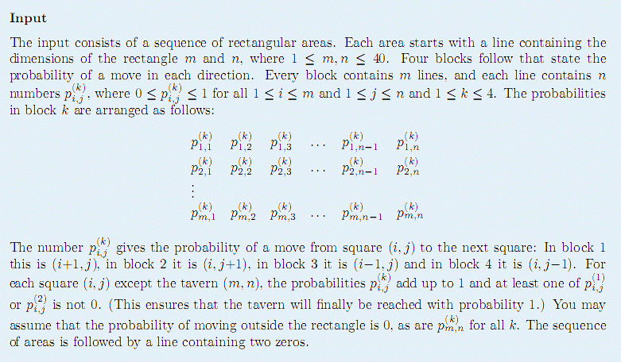
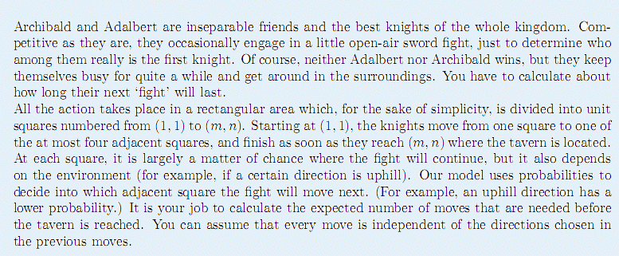
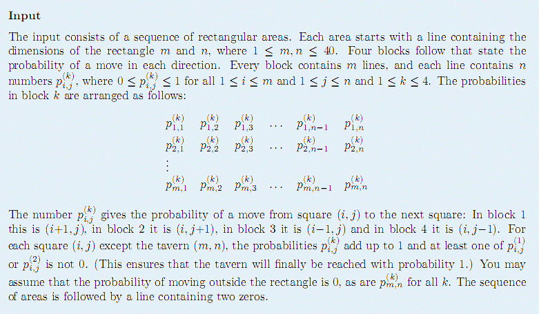
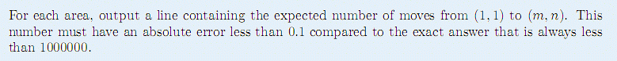

2 2
0.01 0.50
0.00 0.00
0.99 0.00
0.50 0.00
0.00 0.00
0.50 0.00
0.00 0.50
0.00 0.00
1 5
0.0 0.0 0.0 0.0 0.0
1.0 0.1 0.7 0.5 0.0
0.0 0.0 0.0 0.0 0.0
0.0 0.9 0.3 0.5 0.0
3 3
0.000001 0.0 1.0
0.0 1.0 1.0
0.0 0.0 0.0
0.999999 1.0 0.0
1.0 0.0 0.0
0.000001 0.000001 0.0
0.0 0.0 0.0
0.0 0.0 0.0
0.999999 0.0 0.0
0.0 0.0 0.0
0.0 0.0 0.0
0.0 0.999999 0.0
0 0
4.0
41.142857142857146
7.999994000002